Repaso de la Tanda 10S8
La batería de pruebas en 0 fallos de una pasada (tres veces seguidas y en 35 minutos), la descarga más ligera, las zonas de toque de 44 px y los retoques de la 10N12. Marca cada punto en tu teléfono cuando lo hayas comprobado (se guarda en este navegador).
0 · Antes de empezar ✅ Hecho — Prompt guardado tal cual (llegó CORTADO al final de la lista de la prueba); Design al día (Billete Reservas, Entradas Billete, Vuelo Reservas); nota de estado cada 30 minutosMotor: solo se ha tocado shared/routeEngine/adaptarDiaVuelo.js (apartado 0b), la muestra de 60 fechas sale idéntica. Migración nueva: 0073 (contador de lecturas). Dónde: No es de móvil. 0b · Imprescindibles que no caben ✅ Hecho — Aviso solo de los grandes (Coliseo con Foro y Palatino, Vaticano, Galería Borghese; lista por destino fácil de cambiar), uno por línea; los demás en una línea «Y 4 sitios más pasan a “Si te sobra tiempo”.» con [Ver]Entendí «los demás» como los demás IMPRESCINDIBLES que no caben (los que el motor ya marca); los no imprescindibles siguen yendo en silencio a «Si te sobra tiempo». Con dos días adaptados sale una sola línea que suma ambos y [Ver] lleva al primer día afectado. La lista está en src/lib/imprescindiblesGrandes.ts. Dónde: Con pase: llegada a las 16:30 > [Sí, adaptarlos]. 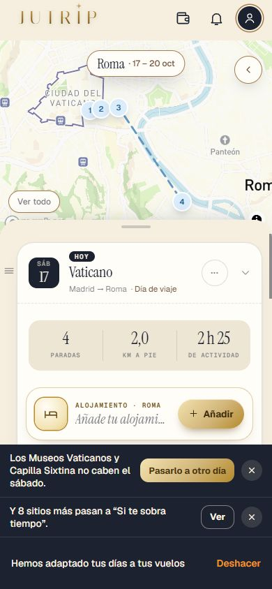
✅ Hecho — Orden al adaptar un día corto: primero los que cierran (el Panteón), los de cualquier hora al final; con llegada a las 16:30 entra el PanteónConsecuencia: con llegada a las 17:00 entra el Panteón pero Piazza Navona queda fuera (va al final del grupo de las de cualquier hora y la cena la bloquea). Muestra de 60 fechas idéntica. Dónde: DÍAS > día 1 tras adaptar. 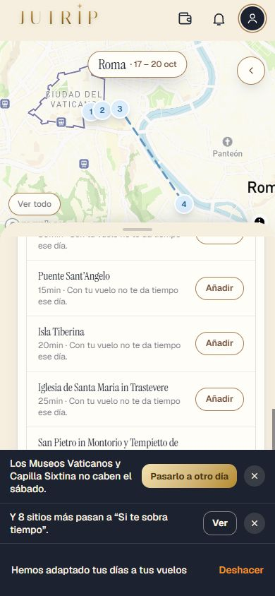
✅ Hecho — Una comida quitada porque cae antes de la llegada: si la cena queda dentro del día, se quedaYa funcionaba; se añadieron comprobaciones. Dónde: DÍAS > día 1 tras adaptar. 1 · Leer un documento cuesta dinero ✅ Hecho — read-ticket solo con sesión, con el pase (de la persona o de grupo), límite de 10 lecturas al día por cuenta y tope de tamaño de 10 MB, con los textos pedidos; sin sesión o sin pase, error sin llamar a ClaudeEric decidió (31-oct) que el pase se exige SIEMPRE, también con el cobro apagado. El límite vive en la tabla de la migración 0073; mientras no la apliques cae a un contador en memoria (flojo en Vercel, por instancia). Dónde: Móvil con pase: subir un archivo de más de 10 MB; sin pase el botón lleva candado. ✅ Hecho — Primero el código de barras, gratis; coste de cada lectura; Haiku frente a SonnetBasta el código si es una tarjeta de embarque de avión con código IATA que trae vuelo, día, asiento y localizador (la mayoría de aerolíneas); no trae horas, terminal ni puerta. Tren, autobús, barco, entradas y hoteles siempre se leen con Claude. Coste por lectura: Haiku 4.5 unos 0,003 $ (tarjeta 0,0040 $, entrada 0,0027 $, hotel 0,0028 $) frente a 0,0076–0,0119 $ con Sonnet 4.6. Con 3 ejemplos reales Haiku lee 22 de 23 campos (solo falla la puerta de embarque, que la app no usa) y Sonnet 23 de 23: se usa Haiku. El coste sale en el registro como read-ticket, read-entry-ticket o read-lodging-booking. Dónde: No es de móvil. 2 · Los documentos, solo con el pase ✅ Hecho — Sin pase, los botones [Añadir tarjeta de embarque]/[Añadir tu billete], [Añadir tu entrada] y [Añadir tu reserva] llevan el candado dorado en círculo azul noche y abren el aviso pequeño del pase con los textos del prompt y [Ver el Pase Roma]; con pase, nunca candado; lo ya guardado se sigue viendo sin pase; el pase de grupo cubre a los invitadosLos textos están en src/lib/avisoPaseTextos.ts (el barco dice «en el puerto»; el prompt solo decía estación). Dónde: Cuenta sin pase: RESERVAS, los tres botones. 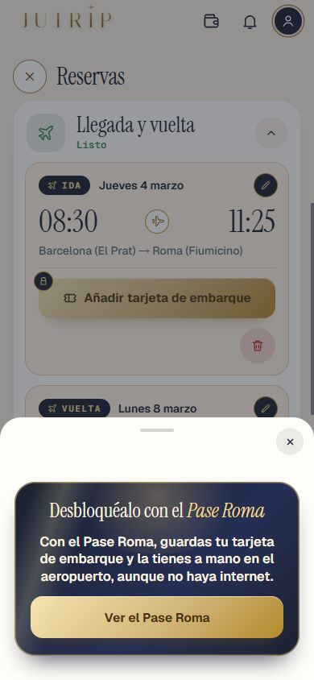
3 · «Llegada y vuelta» como Design ⚠️ A medias — Por bloques; cada lado con su botón y su papelera roja 44×44 abajo a la derecha; sin tarjeta, hora grande y trayecto (fuera duración, «Desde el PDF…» y «Cambiar los datos»); los dos lápices; «Datos del vuelo» con las horas como el mismo dato que la hoja del vueloConsecuencias de Design (B1b) que quiero que veas: (1) sin tarjeta ni datos guardados ya no sale la fila de datos ni su lápiz, así que un «Vuelo VY 6102» escrito a mano no se ve y no hay forma de abrir «Datos del vuelo» sin tarjeta; (2) «Datos del vuelo» ya no pide aerolínea ni «Ref. vuelo» (lo guardado no se borra); (3) tras leer una tarjeta ya no se abre la hoja del vuelo para revisar: se guarda sola (la salida y el aeropuerto de fuera solo si estaban vacíos) y avisa si el día no cuadra. Dónde: RESERVAS > Llegada y vuelta, viaje con ida y vuelta. 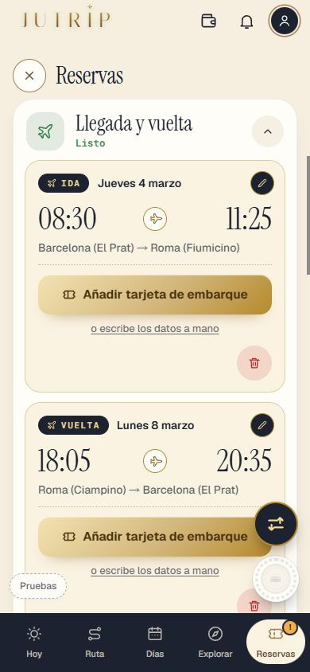
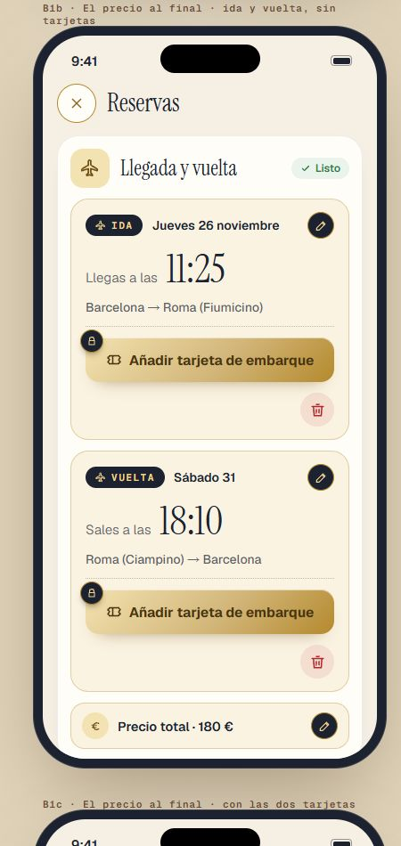
✅ Hecho — El precio en su fila abajo del todo («Precio total · 180 €»; solo ida «Precio · 180 €») con su lápiz y hoja pequeña; nota gris «Si compraste la ida y la vuelta por separado, pon la suma.»El precio sigue yendo al presupuesto («Vuelo a Roma»). Dónde: RESERVAS > Llegada y vuelta, abajo del todo. 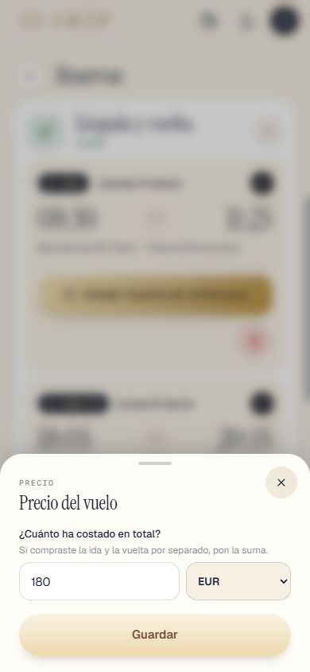
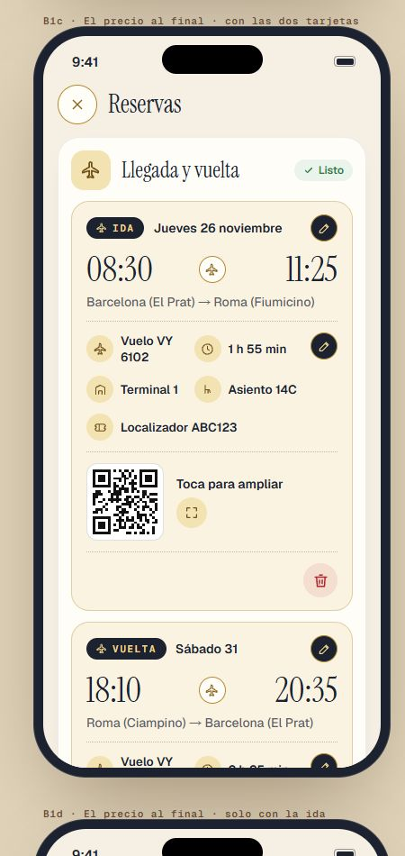
✅ Hecho — La Ida plegada cuando ya ha pasado el día de la ida, con la llegada («Jueves 26 · 11:25 · Fiumicino»)Se activa por la fecha del móvil; las pruebas usan fechas futuras para no plegar. Dónde: Viaje cuya ida ya pasó. 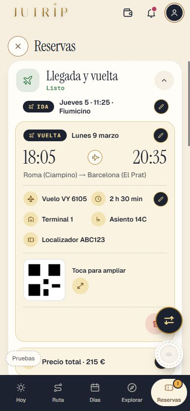
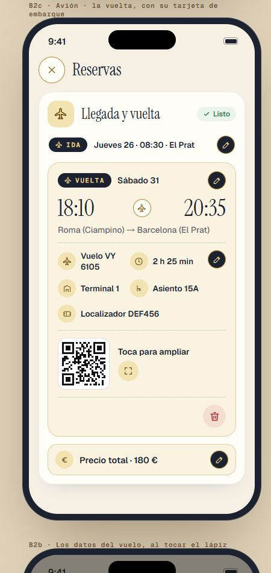
⚠️ A medias — Si la tarjeta no cuadra: «Tu tarjeta dice que llegas a las 11:25. ¿Actualizamos la hora de tu vuelo?» [Sí, actualizar] [No] (en la vuelta, «sales a las 18:10»); si la fecha es otra, «Tu tarjeta es del viernes 27 y tu vuelo está el jueves 26. Revisa las fechas.»Probado con una lectura simulada. Con una tarjeta de avión de código de barras IATA (lo normal) NO sale la pregunta de la hora, porque el código no trae hora que comparar; la de la fecha sí. Dónde: Añadir una tarjeta con otra hora (con pase). 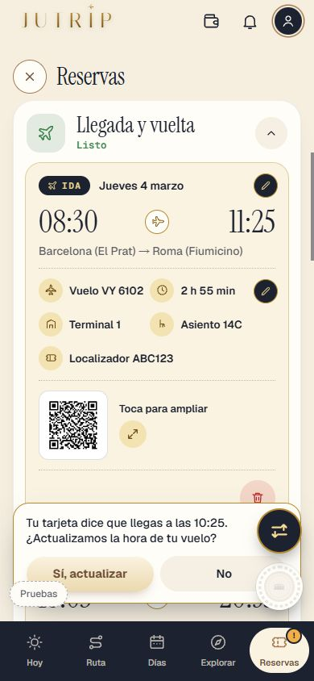
⚠️ A medias — Tren, autobús y barco igual (B3, «Tren 03180», «Coche 003»); «Vuelo VY 6102» y «Entradas y Free Tour» en una línea a 375 px; B4«Entradas y Free Tour» en una línea a 375 px no cabía con la píldora «1 de 8 reservadas» a 24 px: lo dejé a 19 px (la única vez que no sigo el tamaño de Design a la letra). Dónde: RESERVAS en 375 px. 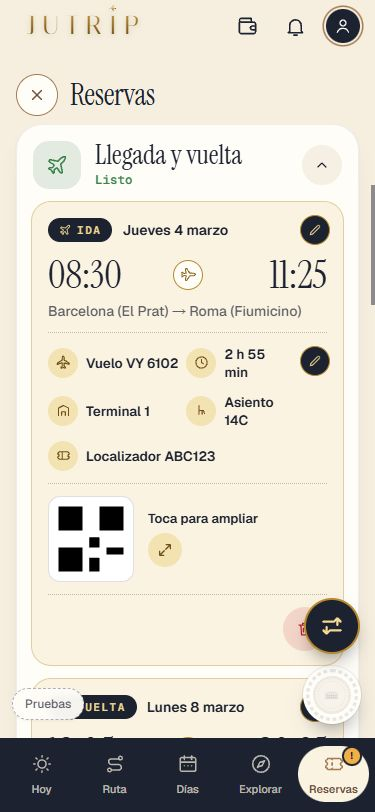
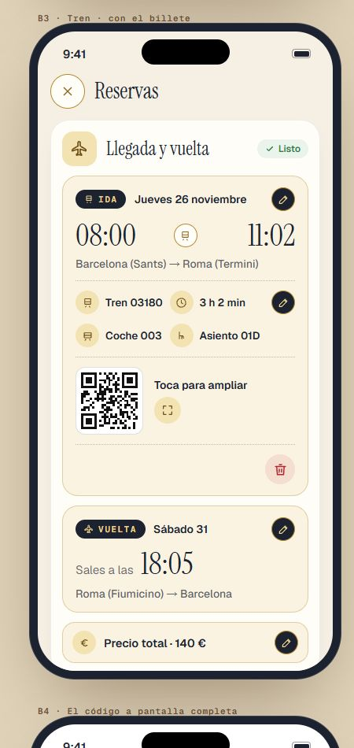
4 · «Entradas y Free Tour» como Design ⚠️ A medias — El bloque en claro; cada entrada con «En tu ruta», sitio grande, día y hora, para quién, precio, [Añadir tu entrada] y papelera; con entrada: localizador y código; los dos lápices; «Datos de la entrada» sin «2 personas»; el Free Tour con el mismo estiloLa papelera de la entrada quita la reserva entera y su billete (con Deshacer, sin confirmación extra): antes «Quitar tu billete» quitaba solo el documento, que ahora solo se quita desde «Datos de la entrada». «Datos de la entrada» lleva para quién, precio y localizador; el día y la hora los cambia el lápiz de arriba. Free Tour: solo comprobado con una parada inyectada (la ruta de prueba no tiene ninguno): prueba con un Free Tour de verdad. Dónde: RESERVAS > Entradas y Free Tour, con y sin pase. 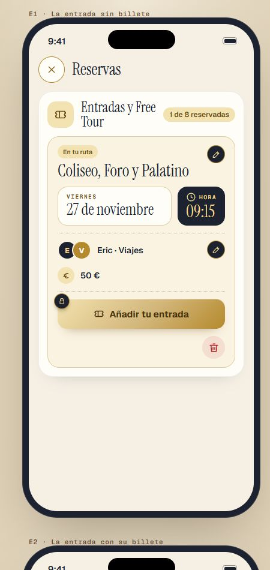
5 · El alojamiento como Design ⚠️ A medias — Nombre grande, fechas, noches en cuadro azul noche, para quién, precio; con pase zona y [Cómo llegar]; [Añadir tu reserva] y papelera; con reserva: dirección, horas, teléfono, localizador; «Listo» en cuanto el hotel está puesto; con pase sin candado; dirección una sola vez; «Datos de la reserva» con Teléfono y Localizador«Listo» con pase y hotel SIN zona sigue diciendo «Falta la zona» (la zona orienta la ruta); con zona y hotel, «Listo». «Datos de la reserva» no edita fechas ni noches (eso va con «Tu alojamiento»); si se lee un documento se abre la hoja completa de antes. Sin pase se mantiene la línea «Con el Pase Roma, adaptamos tus días…» bajo la tarjeta (Design A1 no la pinta). La dirección sale como «Zona Centro · Via Cavour 12, Roma» con la zona nuestra. Dónde: RESERVAS > Alojamiento, con y sin pase. 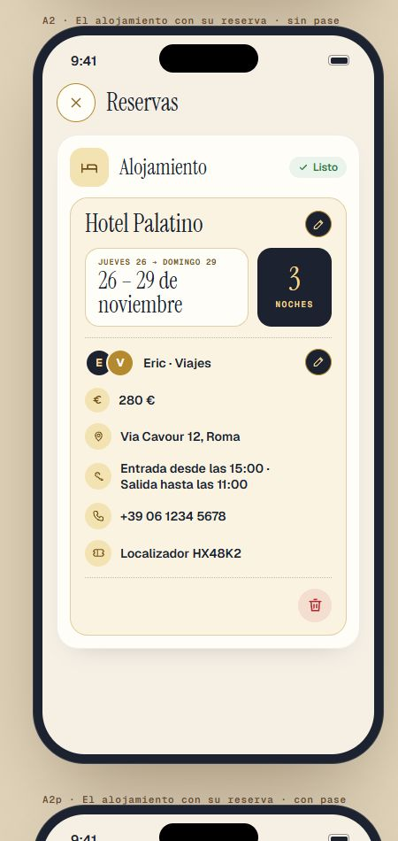
6 · Para todo RESERVAS ✅ Hecho — Papelera roja abajo a la derecha (sustituye a «Eliminar vuelo», «Eliminar alojamiento» y «Quitar entrada»); cabeceras sin línea de texto bajo el título (sí el estado); fechas enteras en las tarjetasDónde: RESERVAS. 7 · La prueba ✅ Hecho — pruebaTanda10S8 (A, B, C, D) con los casos del prompt; REPASO_10S8.html con sus apartados (lo comprueba la propia prueba)El prompt llegó cortado: la parte final de la lista de la prueba la he completado como en las tandas anteriores. Más pruebaJutrip, pruebaTanda10J y la muestra de 60 fechas. Dónde: No es de móvil. Todas las capturas
10s_aviso_375x667 10s_cama_dia_de_prueba 10s_lista_x_375_final 10s_lista_x_final 10s_lista_x_medio 10s_mis_viajes_fechas 10s_toque_ajustes_antes 10s_toque_ajustes_despues 10s_toque_cama_antes 10s_toque_cama_despues